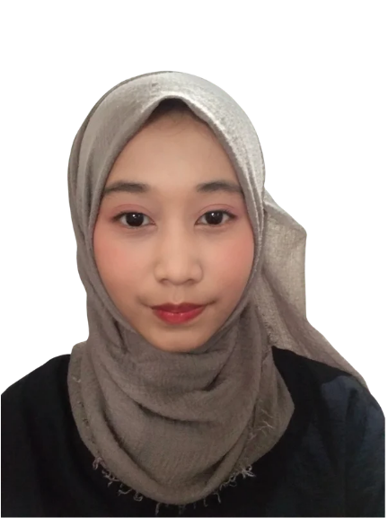

Hi, I'm Luna Aulia Haldi, a Software Engineering graduate with an interest in technology and digital product development. I enjoy turning ideas into practical solutions, exploring new technologies, and continuously improving my skills through hands-on projects.
"Building solutions, learning continuously, and growing through every challenge."